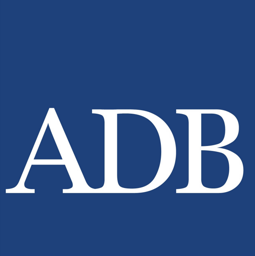
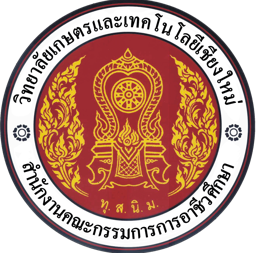

7 พฤศจิกายน 2569ประชุมติดตามความก้าวหน้าและให้คำปรึกษาแผนการลงทุน ร่วมกับคณะทำงาน ADB
SmartGrowต้นแบบเกษตรอัจฉริยะสีเขียวและห่วงโซ่คุณค่ามะเขือเทศเชอรี่มูลค่าสูงเพื่อความยั่งยืน
ปลูกมะเขือเทศเชอรี่ลูกผสมในโรงเรือนควบคุมด้วย IoT ใช้พลังงานแสงอาทิตย์ แปรรูปผลตกเกรดด้วยโดมอบแห้ง และขายตรงสู่ตลาดพรีเมียมในเชียงใหม่ โดยนักศึกษา 5 สาขาวิชาร่วมดำเนินงานตลอดห่วงโซ่
1 ใน 2 โครงการที่ได้รับคัดเลือกจากวัน Pilot SMART Agriculture Project Pitching Day (19 ส.ค. 2569) ให้ได้รับทุน High-Level Technology Fund ภายใต้โครงการ SATIT ของ ADB และ สอศ.


ธนาคารพัฒนาเอเชีย (ADB) ร่วมกับ สำนักงานคณะกรรมการการอาชีวศึกษา และ วิทยาลัยเกษตรและเทคโนโลยีเชียงใหม่พื้นที่ปลูก 4 โรงเรือน
แต่ละโรงขนาด 6 × 16 ม. ปลูกได้ 360 ถุง ถุงละ 2 ต้น
ต้นที่คิดรายได้ 1,600 ต้น
ทดสอบพันธุ์ ฝึกนักศึกษา และกำลังผลิตสำรอง 1,280 ต้น
4 โรง × 720 ต้น = ความจุ 2,880 ต้น/รอบ · แผนการเงินคิดจาก 1,600 ต้น × 5 กก. × 2 รอบ = 16,000 กก./ปี
เงินลงทุน (ทุนให้เปล่า HLT Fund)
2.53ล้านบาท
2,532,850 บาท
รายได้ปีดำเนินงานที่ 1
1.40ล้านบาท
ขายปลีก 86% ขายส่ง 4% อบแห้ง 11%
กำไรสุทธิปีที่ 1
509,215บาท
อัตรากำไรสุทธิ 36.3%
จุดคุ้มทุน
746,795บาท/ปี
53% ของรายได้เป้าหมาย หรือราว 2.7 กก./ต้น/รอบ
ระยะคืนทุน
3.0ปี
กระแสเงินสดสะสม 5 ปี 4.46 ล้านบาท
แม้ผลผลิตลดเหลือ 3 กก./ต้น/รอบ โครงการยังมีกำไรประมาณ 73,000 บาทต่อปี (ที่ราคาขายปลีก 100 บาท/กก.)
ห่วงโซ่คุณค่าครบวงจร
ผลผลิตทุกกิโลกรัมมีปลายทาง ผลเกรดดีขายสด ผลตกเกรดเข้าโดมอบแห้ง ข้อมูลจากเซ็นเซอร์ใช้ทั้งควบคุมการผลิตและเป็นสื่อการเรียนรู้
ต้นน้ำ: ผลิตในโรงเรือน
Upstream production
- ปลูกในถุงวัสดุปลูก ให้น้ำ-ปุ๋ยแม่นยำ
- IoT วัด EC/pH อุณหภูมิ ความชื้น แสง และ PM2.5
- Solar + BESS จ่ายไฟให้ระบบ
พืชศาสตร์ · ช่างกลเกษตร · เทคโนโลยีและนวัตกรรมเกษตร
กลางน้ำ: คัดเกรดและแปรรูป
Midstream post-harvest
- คัดเกรด บรรจุ และเก็บในห้องเย็น
- ผลตกเกรด 1,500 กก. → อบแห้ง 500 กก.
- QR Code ตรวจสอบย้อนกลับ
พืชศาสตร์ · ผลิตภัณฑ์อาหาร
ปลายน้ำ: ตลาดและการขาย
Downstream sales
- ขายปลีก 12,000 กก./ปี ร้านอาหาร โรงแรม คาเฟ่
- LINE OA และช่องทางออนไลน์
- ขายส่งส่วนเกิน 1,700 กก./ปี
เทคโนโลยีการจัดการธุรกิจเกษตร
กำหนดการวันนี้
- เยี่ยมชมโรงเรือน แล้วนำเสนอแผนการดำเนินงาน (หัวข้อ 1–11)
- พักรับประทานอาหารกลางวัน
- ให้คำปรึกษาแผนการลงทุน (หัวข้อ 12)
- สรุปการประชุม
คณะผู้เชี่ยวชาญ
- Mr. Fook Yen Chong, ADB
- Dr. Shaun Wellbourne-Wood, ADB
- ผศ. ดร.สุวลักษณ์ อัศวสันติ, ADB
- คุณอรทัย รัตนจันทร์, ADB Thailand
- รศ. ดร.สิริวัฒน์ สาครวาสี, ม.แม่โจ้
หัวข้อนำเสนอ
เรียงตามลำดับการนำเสนอ กดเลือกหัวข้อเพื่อเปิดรายละเอียด
สรุปการแก้ไขแผนธุรกิจ 16 รายการ ตั้งแต่วัน Pitching Day เปิดดู